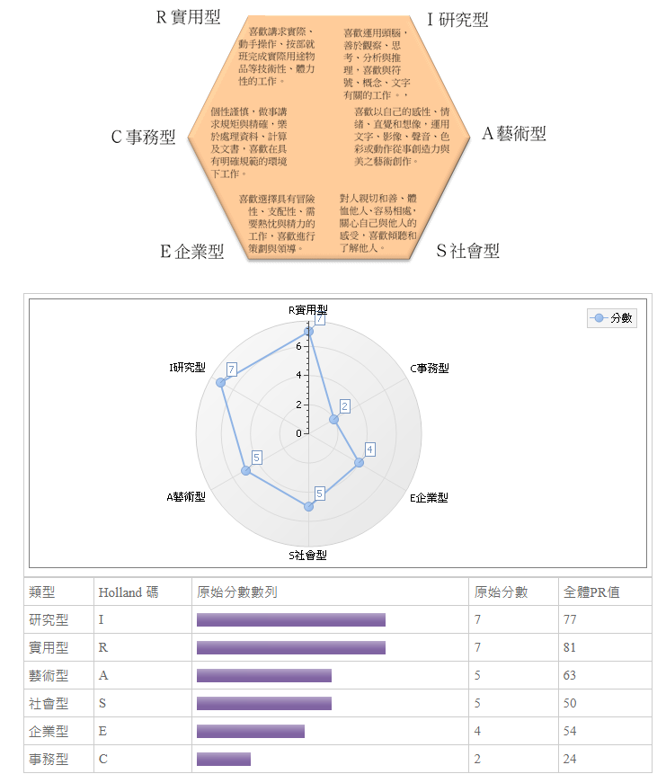
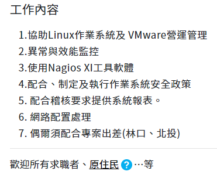
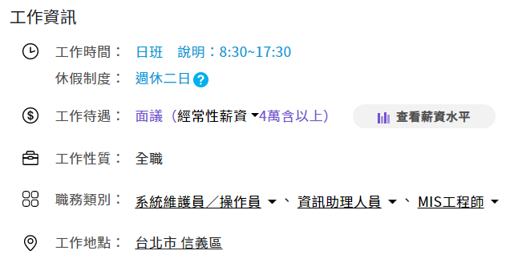
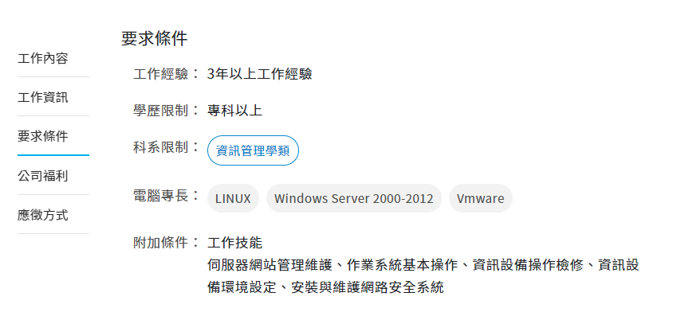
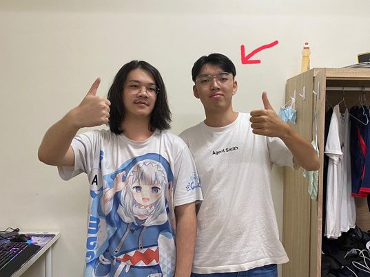

411017250資管二B吳承宗 的求職相關訊息
UCAN職涯分析

UCAN職涯分析顯示，我偏向於實用型與研究型，喜歡動手操作與思考分析。
MIS相關工作介紹
公司名：億力資訊股份有限公司
地址：台北市松山區民權東路三段142號5樓506室




關於我
吳承宗(Wu Cheng Zong)
系級：資訊管理學系大二B班
學號: 411017250
E-Mail:s1101725@gm.pu.edu.tw
我的興趣
經常打排球、打羽球、看漫畫，來度過周末，有時會跟朋友去酒精路跑，發洩平時累積的壓力。